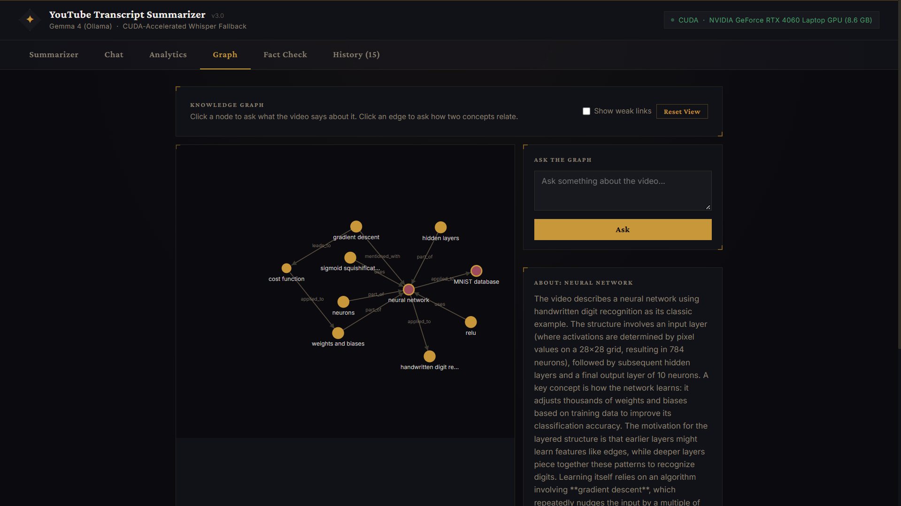
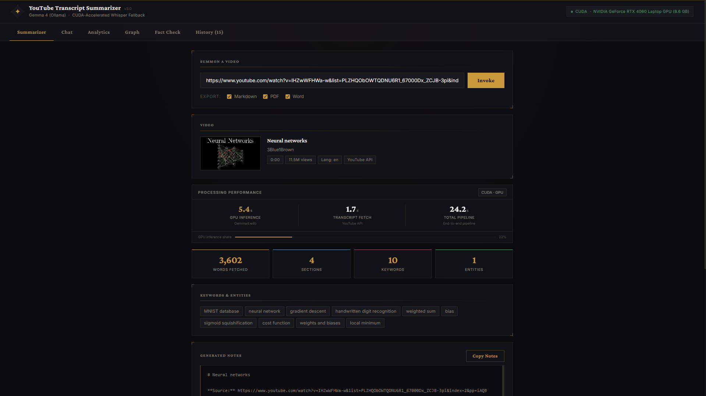
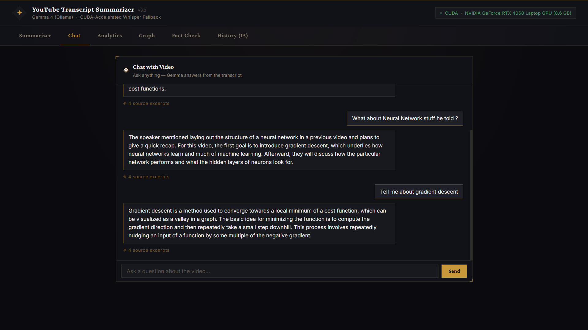
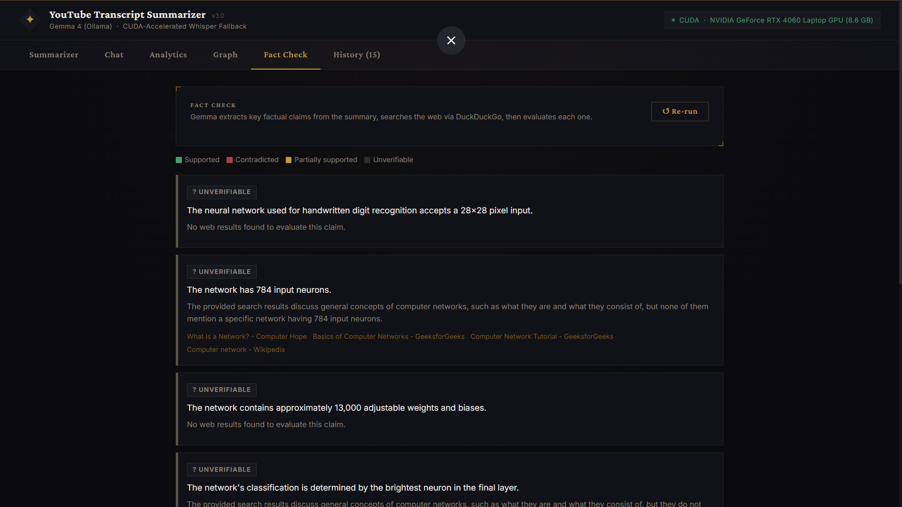
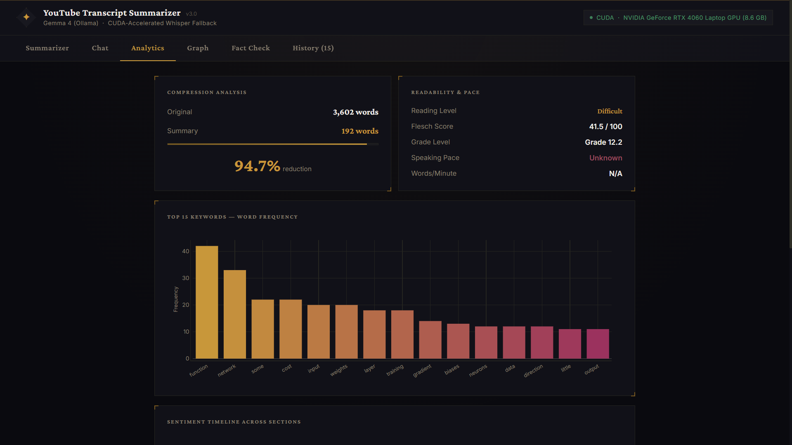

YouTube Transcript Summarizer
Paste a YouTube link and get structured notes from Gemma 4 running on your own GPU. Then chat with the video, explore it as a knowledge graph, and fact-check its claims. No hosted AI APIs.
The knowledge graph
Gemma extracts the people, ideas and relationships from the transcript and draws them as a graph. Click a node or an edge to ask what the video says about it. Faint dashed lines are links the model is less sure about.

What it does
Summary and notes
Structured notes with keywords and entities, exportable to Markdown, PDF and Word.

Chat with the video
Ask questions and get answers pulled from the transcript with retrieval over a local vector store.

Fact check
Pulls out checkable claims, searches the web for each, and marks it supported, contradicted, partly supported or unverifiable.

Analytics
Readability, speaking pace, sentiment over time, word frequency and entity types.

How it works
- Transcript. Fetched from YouTube, with a Whisper speech-to-text fallback when captions are missing.
- Summary. Gemma 4 (e4b) through Ollama writes the notes, keywords and entities.
- Chat. The transcript is chunked and embedded into ChromaDB, and answers are grounded in the retrieved chunks.
- Graph. Gemma extracts nodes and edges, and a D3.js view lets you query any part of the graph.
- Fact check. Claims go through a web search, then Gemma compares each one against what was found.
Run it yourself
This page only shows the project. The app runs on your own machine, since the model needs a GPU. You need Docker Desktop and an NVIDIA GPU.
git clone https://github.com/tanish-litrago/yt-transcript-summarizer cd yt-transcript-summarizer docker compose up --build
Then open localhost:5000. The first run downloads the models (several GB).